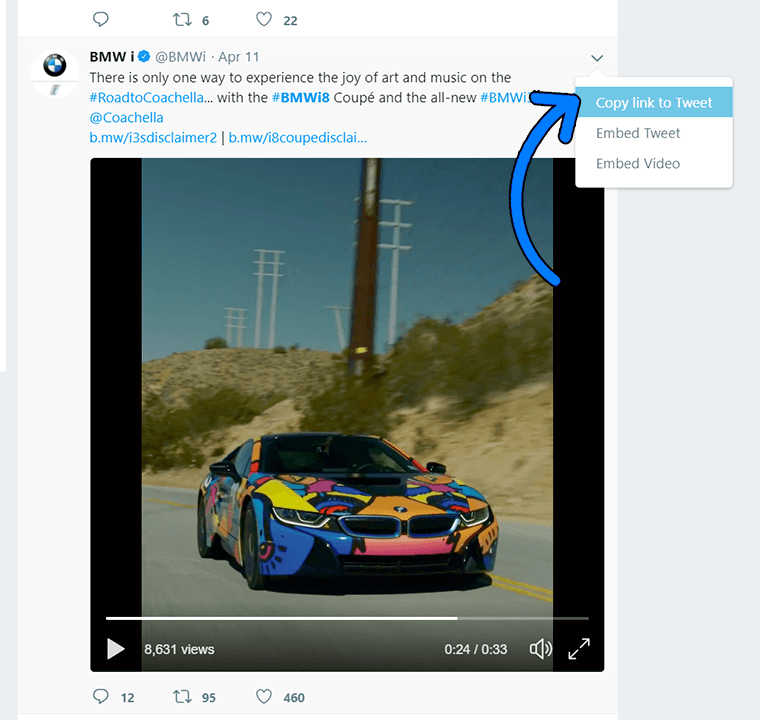
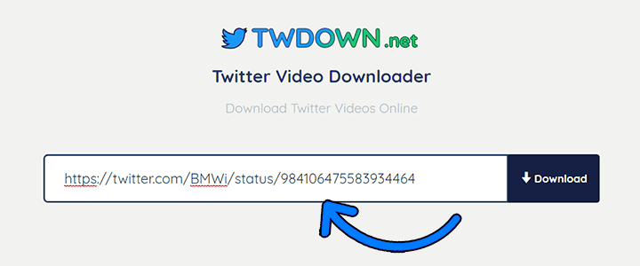
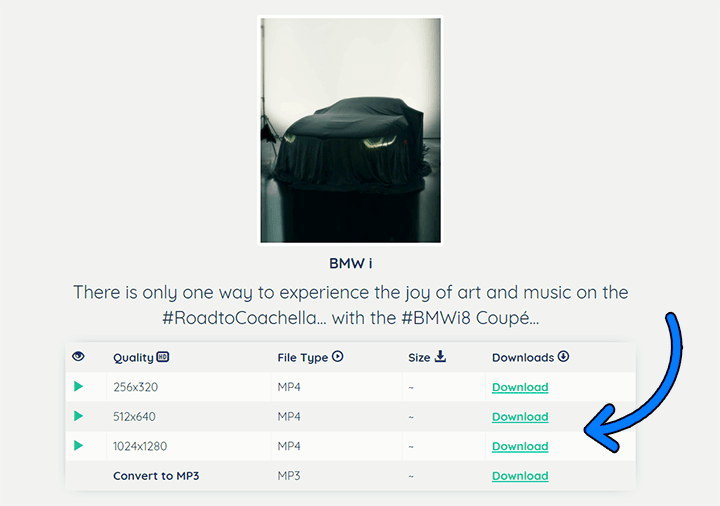

Fast & easy 3-step guide for any device
Find the tweet with the video you wish to download on your Twitter / X feed. Click the Share button underneath the post and select "Copy link". Alternatively, you can copy the full URL directly from your browser's address bar.

Go to XDock, paste your copied Twitter link into the input box, and click the "Download" button. XDock will process and extract all available video qualities in less than a second.

Choose your preferred download quality (e.g., 1080p, 720p, 480p, or standard MP4) and click "Download" (or Right-Click → Save video as...). You can also extract and download the audio in MP3 format.

If the video starts playing in your browser rather than downloading directly, simply right-click the video player and choose "Save Video As..." to save it directly to your computer.
XDock supports all modern Twitter links, including new x.com URLs as well as legacy twitter.com URLs. Simply paste any tweet link and download immediately!